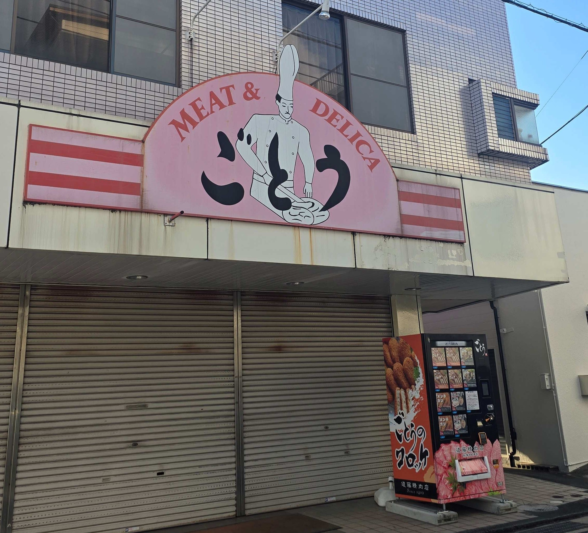
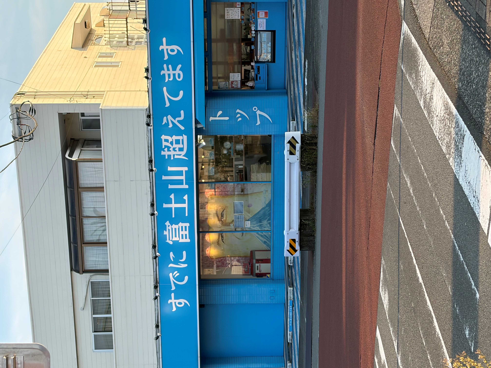
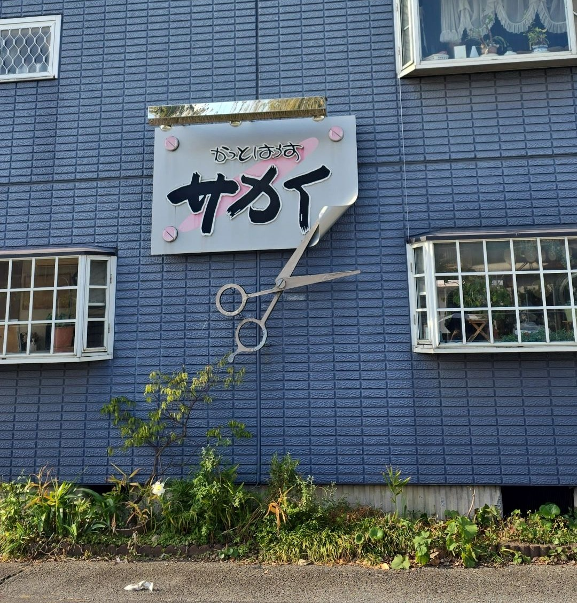

<!DOCTYPE html>
<html lang="jp">
<head>


</head>
<body style="background-image: url('./images/blue\ gradient\ border\ ipad.jpg'); background-size: cover; background-position: center; background-repeat: no-repeat; min-height: 100vh;">


</body>
</html>


    
</head>
<body>
    
    <h1>路上観察</h1>
    <!-- 塊ごとにdivタグで区切るようにしましょう。 -->
    <div>
    <span style="font-size: 22px; font-weight: 600;">①ごとう精肉店の看板</span><br>
        <br>

    撮影日10月18日　場所 下土狩駅の近く　撮影 自分<br>
    古くから愛されてきた精肉店の看板。真ん中にコックさんの絵が描いてあるが<br>
    よく見るとズボンの延長線上にお肉があり、絵のタッチが独特。色あせているのも味がある。<br>
<br>
<span style="font-size: 22px; font-weight: 600;">②インパクト強め看板</span><br>
        <br>
        撮影日10月17日　場所 自宅の近く　撮影 自分<br>
        文字の大きさ・真っ青な店、店名など全てにおいてパッと見ただけでも頭に残るし目を引く。<br>
        思わず立ち止まってしまう看板。店名の下によく見ると顔が描いてある食パンがいる。ちなみにここは食パン屋さんです。<br>
        <br>
        <span style="font-size: 22px; font-weight: 600;">立体の看板</span><br>
        <br>
        撮影日10月17日　場所 通学路　撮影 自分<br>
毎日学校の通り道によく見たらあった看板。大きな立体のハサミがあるのが特徴的でかわいい。<br>
2個目の看板とは違い、どんなお店か一目でわかって形を活かした工夫がされていて面白い。<br>

    


        